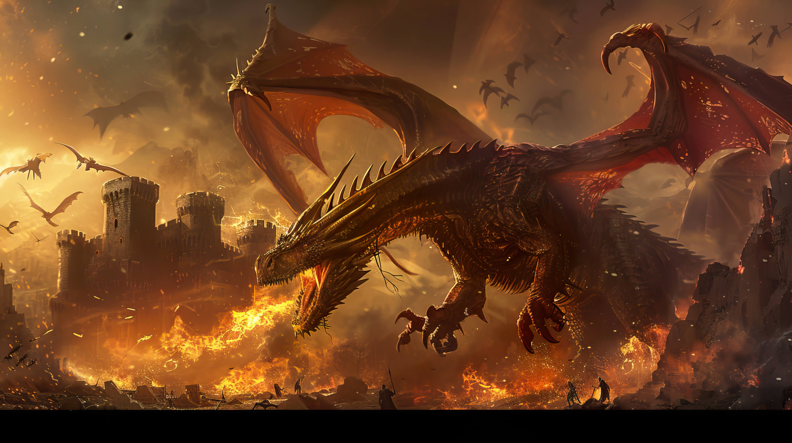

Dragons, legendary creatures found in diverse cultures globally, likely originated from a combination of factors. Ancient mythologies first described dragon-like beings, often resembling giant serpents, as seen in Mesopotamian art and literature. Some theories suggest that early humans, with an innate fear of predators like snakes, projected these fears into grander mythical creatures. Fossil discoveries of dinosaurs and large reptiles may have also contributed to the image of dragons. Over time, cultural interpretations shaped dragons into symbols of both chaos and power, evolving into the varied forms we know today.
Dragons are prominent figures in global media, serving diverse roles. In Western media, they often appear as fearsome, fire-breathing creatures, like Smaug in The Hobbit, symbolizing threats or challenges or hoarding mass treasures. Eastern media frequently portrays them as benevolent, serpentine beings associated with power and good fortune, such as those in Chinese mythology. From fearsome foes to wise allies, dragons capture imaginations across film, literature, and games, embodying a spectrum of symbolic meanings and fantastical elements.
